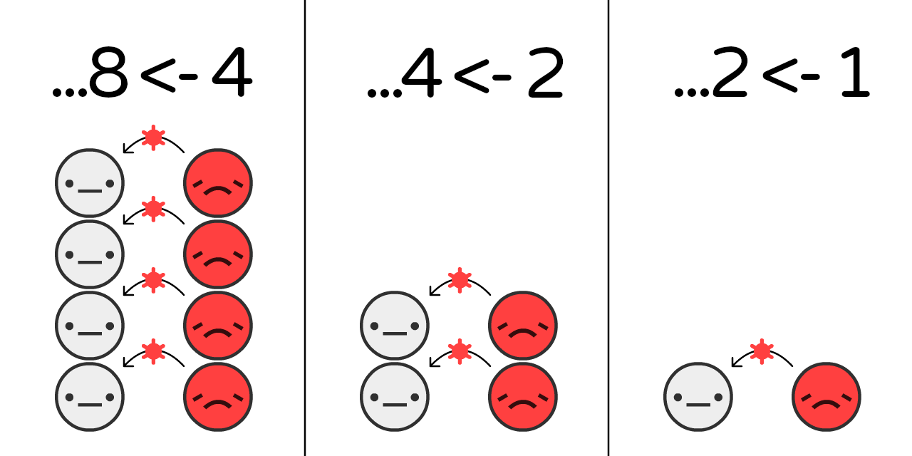
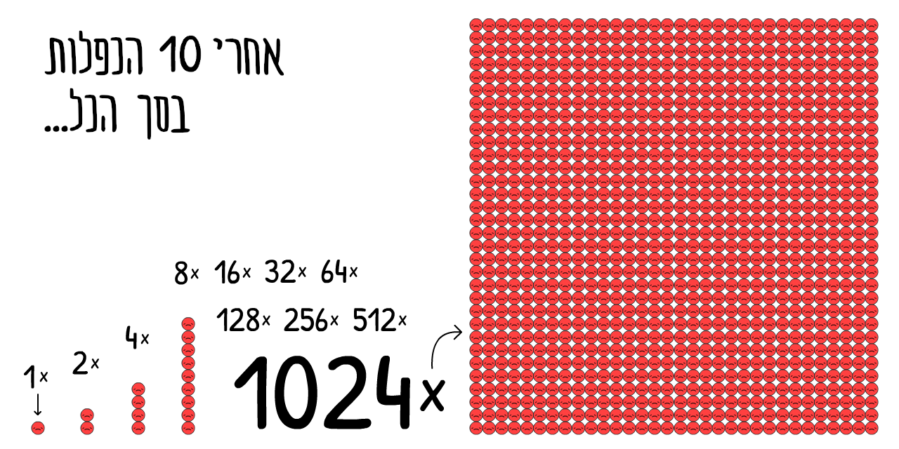
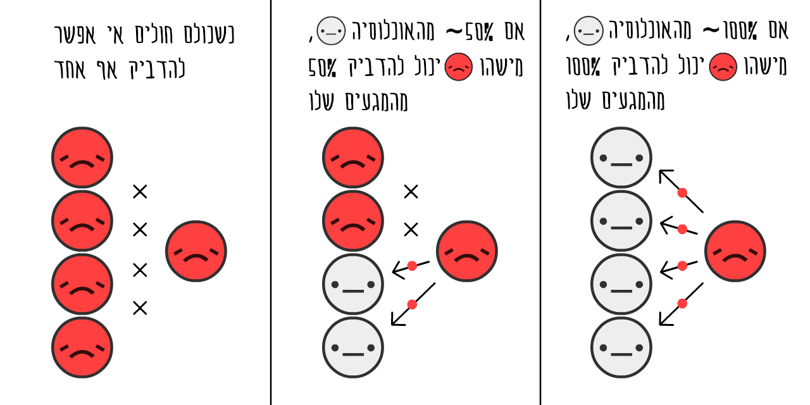
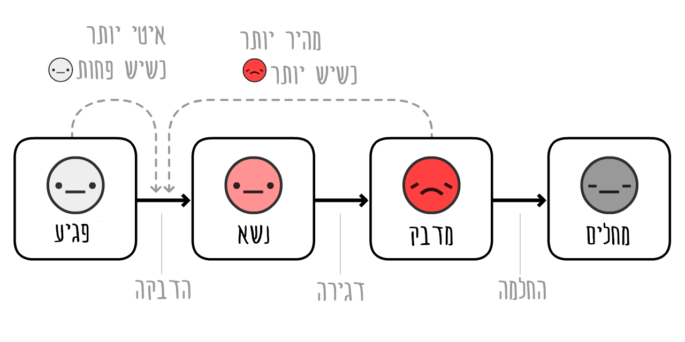
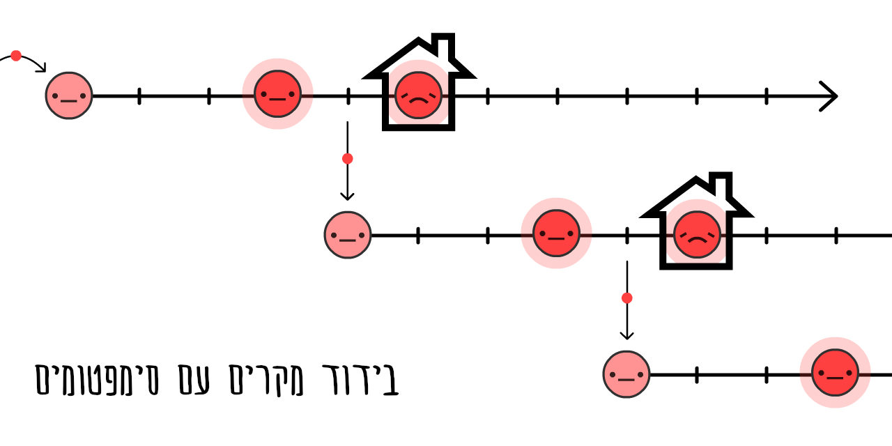
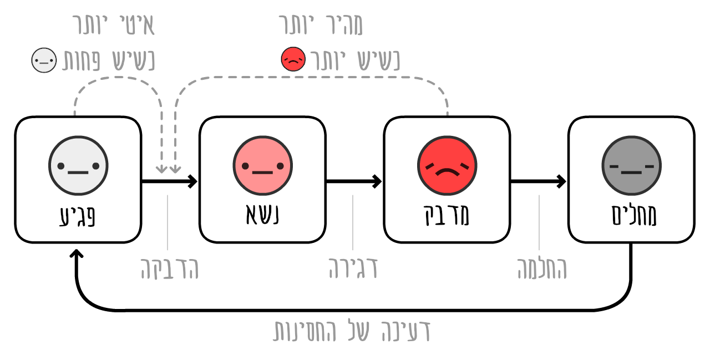
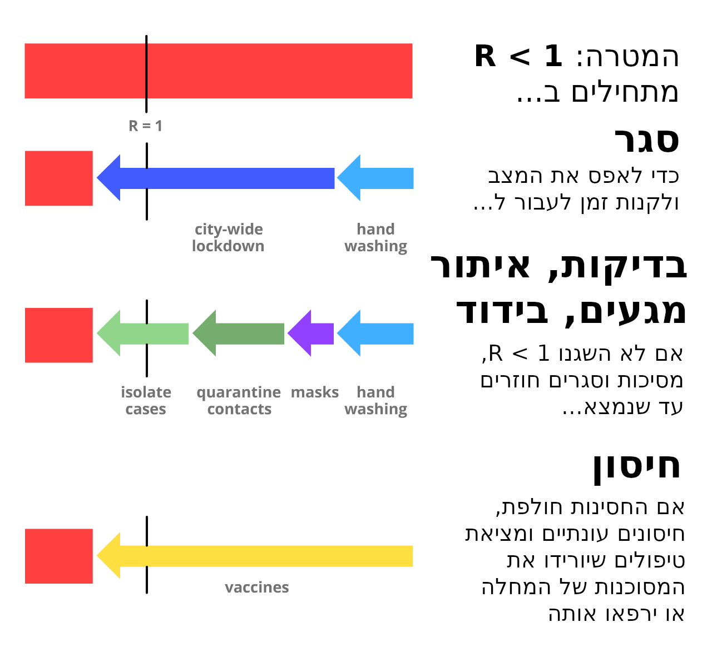

<div>
<iframe id="splash" width="960" height="480" src="banners/splash.html"></iframe>
<div style="top: 70px;font-size: 75px;font-weight: bold;">
What Happens Next?
מה יקרה עכשיו?
</div>
<div style="font-weight: 500;top: 140px;left: 10px;font-size: 29px;">
COVID-19 Futures, Explained With Playable Simulations
העתיד עם COVID-19 בסימולציות אינטראקטיביות
</div>
<div style="font-weight: 100;top: 189px;left: 10px;font-size: 19px;line-height: 21px;">
<b>
🕐 30 min play/read
🕐 30 דקות קריאה/משחק
·
</b>
by
<a href="https://scholar.google.com/citations?user=_wHMGkUAAAAJ&hl=en">Marcel Salathé</a>
(epidemiologist)
&
<a href="https://ncase.me/">Nicky Case</a>
(art/code)
</div>
</div>אם אמרו לך פעם “הדבר היחיד שצריך לפחד ממנו הוא הפחד עצמו” “The only thing to fear is fear itself” was stupid advice.
והעיקר, אמרו לנו, לא לפחד כלל
Sure, don’t hoard toilet paper – but if policymakers fear fear itself, they’ll downplay real dangers to avoid “mass panic”. Fear’s not the problem, it’s how we channel our fear. Fear gives us energy to deal with dangers now, and prepare for dangers later.
אין צורך לאגור נייר טואלט, אבל יש מקום לקצת פחד בריא. השאלה היא איך משתמשים בפחד הזה כדי להתמודד עם הבעיות של עכשיו ולהתכונן למה שמצפה לנו.
Honestly, we (Marcel, epidemiologist + Nicky, art/code) are worried. We bet you are, too! That’s why we’ve channelled our fear into making these playable simulations, so that you can channel your fear into understanding:
גם אנחנו (Marcel, epidemiologist + Nicky, art/code) מודאגים. לכן הכנו את הסימולטור הזה ואתם מוזמנים להשתמש בו כדי להפוך את הפחד שלכם להבנה:
החודשים האחרונים )מבוא לאפידימיולוגיה, מודל SEIR, R ו R0(
החודשים הקרובים )סגרים, מעקב מגעים, מסיכות(
השנים הקרובות )איבוד חסינות? יהיה חיסון?(
The Last Few Months (epidemiology 101, SEIR model, R & R0)
The Next Few Months (lockdowns, contact tracing, masks)
The Next Few Years (loss of immunity? no vaccine?)
This guide (published May 1st, 2020. click this footnote!→1) is meant to give you hope and fear. To beat COVID-19 in a way that also protects our mental & financial health, we need optimism to create plans, and pessimism to create backup plans. As Gladys Bronwyn Stern once said, “The optimist invents the airplane and the pessimist the parachute.”
המדריך הזה (פורסם בתחילת מאי →2) והוא מיועד לתת לכם תקווה וגם פחד. כדי לנצח את COVID-19 בדך שגם תשמו על הבריאות הנפשית והכלכלית שלנו אנחנו צריכים אופטימיות כדי לתכנן תכניות ופסימיות כדי לתכנן תכניות גיבוי. כמו שאמר Gladys Bronwyn “האופטימי ממציא את המטוס והפסימי ממציא את המצנח.”2020
So, buckle in: we’re about to experience some turbulence.
נצא לדרך:
<div>
<img src="banners/curve.png" height=480 style="position: absolute;"/>
<div>החודשים האחרונים</div>
</div>Pilots use flight simulators to learn how not to crash planes. טייסים מתשמשים בסימולטורים כדי ללמוד איך לרסק מטוסים ולצאת מזה בשלום.
Epidemiologists use epidemic simulators to learn how not to crash humanity.
אפידימיולוגים משמשים בסימולטרים כדי ללמוד איך להוציא את האנושות בשלום ממגפות.
So, let’s make a very, very simple “epidemic flight simulator”! In this simulation,
אז למה לא נבנה לנו סימולטור מגפות מאד מאד פשטני! בסימולטור הזה,

It’s estimated that, at the start of a COVID-19 outbreak, the virus jumps from an
מעריכים שבתחילת ההתפרצות של COVID-19, הוירוס דילג מ
If we simulate “double every 4 days” and nothing else, on a population starting with just 0.001%
אם אנחנו מכניסים לסימולטור שלנו “הכפלה כל 4 ימים” ושום דבר אחר על אוכלוסיה שמתחילה עם 0.001%
Click “Start” to play the simulation! You can re-play it later with different settings: (technical caveats: 4)
<iframe src="sim?stage=epi-1" width="800" height="540"></iframe>This is the exponential growth curve. Starts small, then explodes. “Oh it’s just a flu” to “Oh right, flus don’t create mass graves in rich cities”.
זה הגידול האקספוננציאלי. מתחיל ק’טן, ואז מתפוצץ. “זאת רק שפעת” ואז “שפעת לא יוצרת קברים המוניים בערים עשירות”.

But, this simulation is wrong. Exponential growth, thankfully, can’t go on forever. One thing that stops a virus from spreading is if others already have the virus:
אבל הסימולציה הזו לא נכונה. גידול אקספוננציאלי, למרבה המזל, לא יכול להמשך לנצח. אחד הדברים שעוצר את ההתפשטות של הוירוס הוא כשלאחרים כבר יש אותו:

The more
ככל שיש יותר
How’s this change the growth of an epidemic? Let’s find out:
איך זה משפיע על התפשטות המגיפה? בואו נראה:
<iframe src="sim?stage=epi-2" width="800" height="540"></iframe>This is the “S-shaped” logistic growth curve. Starts small, explodes, then slows down again.
זו העקומה הלוגיסטית. מתחילה בקטן, מתפוצצת, ואז שוב דועכת.
But, this simulation is still wrong. We’re missing the fact that
אבל הסימולציה הזו עדיין לא נכונה. אנחנו מפספסים את העובדה ש I אנשים מדבקים בסופו של דבר מפסיקים להדביק. או שהם מחלימים, או שהם “מחלימים” עם נזק לריאות, או שהם מתים.
For simplicity’s sake, let’s pretend that all
לשם הפשטות, נניח שכל I המדביקים נהיים R מחלימים. (רק נזכור שבמציאות חלק מהם מתים) R לא יכולים להדביק שוב, ונניח לעת עתה שהם נשארים חסינים לשארית חייהם.
With COVID-19, it’s estimated you’re
ההערכה היא שעם COVID-19 אתה I מדבק למשך 10 ימים בממוצע. זה אומר שחלק יחלימו לפני שיעברו 10 ימים, וחלק אחרי.
<iframe src="sim?stage=epi-3" width="800" height="540"></iframe>This is the opposite of exponential growth, the exponential decay curve.
זה ההפך מגידול אקפוננציאלי - זו עקומה של דעיכה אקספוננציאלית.
Now, what happens if you simulate S-shaped logistic growth with recovery?
עכשיו, מה יקרה אם נעשה סימולציה של עקומה לוגיסטית עם התאוששות?

Let’s find out.
בואו נראה.
העקומה האדומה היא מספר המקרים הנוכחי
העקומה האפורה היא סך כל המקרים (נוכחי + מחלימים
<iframe src="sim?stage=epi-4" width="800" height="540"></iframe>And that’s where that famous curve comes from! It’s not a bell curve, it’s not even a “log-normal” curve. It has no name. But you’ve seen it a zillion times, and beseeched to flatten.
וזה המקור של העקומה שאנחנו רואים בכל מקום! זו לא עקומת פעמון, זו לא עקומה שאנחנו מכירים ממקום אחר אבל זו העקומה שהשתלטה על החיים של כולנו ואותה אנחנו מנסים לשטח!
This is the the SIR Model,6
(
the second-most important idea in Epidemiology 101:
זה המודל המכונה SIR Model (
the second-most important idea in Epidemiology 101: הרעיון השני הכי חשוב במבוא לאפידמיולוגיה:

NOTE: The simulations that inform policy are way, way more sophisticated than this! But the SIR Model can still explain the same general findings, even if missing the nuances.
שימו לב: הסימולציות שמשמשות לקבלת החלטות הרבההרבה יותר מורכבות מזה! אבל מודל SIR יכול עדיין להסביר כמה ממצאים מרכזיים, אפילו אם הוא מתעלם מכמה ניואנסים.
Actually, let’s add one more nuance: before an
למעשה, הואו נוסיף עוד קצת ניואנס: לפני שS נהיה I, הוא נהיה Eנשא. זה השלב שבו הוא כבר נדבק בוירוס, אבל הוא עדיין לא מדביק אחרים.

(This variant is called the SEIR Model7, where the “E” stands for
)הגרסה הזו של המודל מכונה SEIR Model* והאות “E” פירושה E “Exposed”. (שימו לב שהמילה Exposed משמשת בשפה היום יומית לתאר מישהו שנחשף לנגיף אבל אולי לא נדבק. כאו הכוונה היא למישהו שנדבק בוודאות אבל עדיין לא מדבק)
For COVID-19, it’s estimated that you’re
ל COVID-19, ההערכה היא שאתה E - .למשך 3 ימים, בממוצע נשא-אבל-אלא-מדבק מה יקרה אם נוסיף את זה לסימולציה?
העקומות האדומה + הוורודה ביחד הן כמות המקרים הנוכחית (מדבקים
העקומה האפורה היא סך כל המקרים (כמות מקרים נוכחית + מחלימים
<iframe src="sim?stage=epi-5" width="800" height="540"></iframe>Not much changes! How long you stay
לא הרבה השתנה, משך הזמן שבו אתה נשאר
Why’s that? Because of the first-most important idea in Epidemiology 101:
למה? בגלל העיקרון הראשון של מבוא לאפידימיולוגיה:

Short for “Reproduction number”. It’s the average number of people an
שמסמל את ה “Reproduction number”. המספר הממוצע של אנשים שI מדביק לפני הוא מחלים )או נפטר)

R changes over the course of an outbreak, as we get more immunity & interventions.
R הוא זה שמשנה את הכיוון של ההתפרצות ככל שאנחנו מפתחים יותר חסינות או מתערבים במצב בכל מני דרכים.
R0 (pronounced R-nought) is what R is at the start of an outbreak, before immunity or interventions. R0 more closely reflects the power of the virus itself, but it still changes from place to place. For example, R0 is higher in dense cities than sparse rural areas.
R0 הןא הערך של R בתחילת ההתפרצות, לפני שאנשים התחילו לפתח עמידות ולפני שהתחלנו לנקוט באמצעים לריסון ההתפרצות. R0 משקף טוב יותר את העוצמה של הנגיף עצמו, ועדיין הוא עשוי להשתנות ממקום למקום. למשל, R0 גבוה יותר ערים צפופות מאשר ביישובים חקלאיים.
(Most news articles – and even some research papers! – confuse R and R0. Again, science terminology is bad)
)רוב הכתבות החדשות - ואפילו חלק מהמאמרים האקדמיים! - מבלבלים בין R ל R0(
The R0 for “the” seasonal flu is around 1.289. This means, at the start of a flu outbreak, each
הערך של R0 לשפעת העונתית הוא בערך 1.2810. זה אומר, שבתחילת התפרצות של שפעת, כל
The R0 for COVID-19 is estimated to be around 2.2,11 though one not-yet-finalized study estimates it was 5.7(!) in Wuhan.12
מעריכים ש R0 ל COVID-19 הוא בערך 2.2,13 למרות שמחקר אחד לא סופי מעריך אותו ב !5.7(!) in Wuhan.14
In our simulations – at the start & on average – an
בסימולציה שלנו - בתחילת ההתפרצות, בממוצע - I מדביק מישהו כל 4 ימים, למשך 10 ימים. “4 ימים” נכנס לתוך “10 ימים” פעמיים וחצי. זה אומר ש - בתחילת ההתפרצות, בממוצע - כל I ידביק 2.5 אחרים. לכן R0=2.5. )הסתייגויות:16(
Play with this R0 calculator, to see how R0 depends on recovery time & new-infection time:
** שחקו עם מחשבון R0 הזה כדי לראות איך R0 מושפע מזמן ההחלמה והזמן להדבקות חדשות:**
<iframe src="sim?stage=epi-6a&format=calc" width="285" height="255"></iframe>But remember, the fewer
אבל צריך לזכור, ככל שיש פחות S, לוקח יותק זמן ל S להפוך להיות I. הערך של R עכשיו תלוי לא רק בערך הבסיסי שלו (R0) אלא גם בכמה אנשים כבר לא S חשופים )לדוגמא, אנשים שהחלימו ופיתחו חסינות טבעית(
<iframe src="sim?stage=epi-6b&format=calc" width="285" height="390"></iframe>When enough people have immunity, R < 1, and the virus is contained! This is called herd immunity. For flus, herd immunity is achieved with a vaccine. Trying to achieve “natural herd immunity” by letting folks get infected is a terrible idea. (But not for the reason you may think! We’ll explain later.)
כשלמספיק אנשים יש חסינות, R>1, והמגיפה נעצרת! המצב הזה נקרא חסינות עדר. במקרה של שפעת, חסינות עדר מושגת באמצעות חיסון. לנסות לתת לאנשים להידבק כדי להשיג “חסינות עדר טבעית” זה רעיון איום ונורא. (אבל אולי לא מהסיבות שאתם חושבים! תיכף נסביר.)
Now, let’s play the SEIR Model again, but showing R0, R over time, and the herd immunity threshold:
בואו נשחק שוב עם מודל SEIR, אבל הפעם נראה את R0, ערך R, והסף שממנו אנחנו משיגים חסינות עדר:
<iframe src="sim?stage=epi-7" width="800" height="540"></iframe>NOTE: Total cases does not stop at herd immunity, but overshoots it! And it crosses the threshold exactly when current cases peak. (This happens no matter how you change the settings – try it for yourself!)
** שימו לב: המספר הכללי של המקרים לא מפסיק לעלות כשמגיעים לחסינות עדר. הוא ממשיך לטפס ** והוא חוצה את הסף של חסינות העדר בדיוק כשכמות המקרים מגיעה לשיא שלה (ולא משנה איך תשנו את ההגדרות - נסו בעצמכם)
This is because when there are more non-
זה קורה בגלל שכשיש יותר אנשים שאינם S מסף החסינות, אנחנו מקבלים R>1. וכש R>1 כמות המקרים החדשים מפסיקה לגדול - וזה השיא.
If there’s only one lesson you take away from this guide, here it is – it’s an extremely complex diagram so please take time to fully absorb it:
** אם תצאו מהמאמר הזה אם דבר אחד - הנה הדבר הזה ** - זו דיאגרמה מסובכת במיוחד אז קחו כמה דקות להפנים אותה:
This means: we do NOT need to catch all transmissions, or even nearly all transmissions, to stop COVID-19!
זה אומר שאנחנו לא חייבים לעצור את כל ההדבקות, או אפילו קרוב לזה, כדי לעצור את המגיפה!
It’s a paradox. COVID-19 is extremely contagious, yet to contain it, we “only” need to stop more than 60% of infections. 60%?! If that was a school grade, that’s a D-. But if R0 = 2.5, cutting that by 61% gives us R = 0.975, which is R < 1, virus is contained! (exact formula:17)
זה מרגיש פרדוקסלי. COVID-19 היא מחלה מדבקת ביותר, אבל כדי לעצור אותה, אנחנו צריכים לעצור יותר מ 60% מההדבקות. 60% זה אולי לא ציון מרשים במיוחד בבית הספר אבל אם R0=2.5, ונצליח להקטין אותו ב 61% נקבל R = 0.975, וזה פחות מ1, המגיפה נעצרה! )הנוסחא המדוייקת:18(

(If you think R0 or the other numbers in our simulations are too low/high, that’s good you’re challenging our assumptions! There’ll be a “Sandbox Mode” at the end of this guide, where you can plug in your own numbers, and simulate what happens.)
)אם נראה לכם שהערך של R0 או מספר אחר בסימולציה הזו נמוך/גבוה מדי, זה מצויין! בסוף המאמר יש סימולטור בוא תוכלו להזין את המספרים שלכם ולראות מה יוצא(
Every COVID-19 intervention you’ve heard of – handwashing, social/physical distancing, lockdowns, self-isolation, contact tracing & quarantining, face masks, even “herd immunity” – they’re all doing the same thing:
כל מה שאנחנו עושים כדי להתמודד עם המגיפה הזו - שטיפת ידיים, ריחוק חברתית, סגרים, בידוד, מעקב מגעים, מסיכות ואפילו" חסינות עדר" כולם מנסים להשיג אותה מטרה:
Getting R < 1.
להגיע ל R>1.
So now, let’s use our “epidemic flight simulator” to figure this out: How can we get R < 1 in a way that also protects our mental health and financial health?
עכשיו, בואו נשתמש בסימולטור שלנו כדי לבוק איך אנחנו יכולים להגיע ל R > 1 ששומרת על הבריאות הנפשית והפיננסית שלנו.
Brace yourselves for an emergency landing…
<div>
<img src="banners/curve.png" height=480 style="position: absolute;"/>
<div>The Next Few Months</div>
<div>החודשים הקרובים</div>
</div>…could have been worse. Here’s a parallel universe we avoided:
…יכלו להיות יותר גרועים. הנה כמה יקומים מקבילים שלא הגענו אליהם
###Scenario 0: Do Absolutely Nothing
###תרחיש 0: לא לעשות שום דבר
Around 1 in 20 people infected with COVID-19 need to go to an ICU (Intensive Care Unit).19 In a rich country like the USA, there’s 1 ICU bed per 3400 people.20 Therefore, the USA can handle 20 out of 3400 people being simultaneously infected – or, 0.6% of the population.
בערך 1 מכל 20 נדבקים ב COVID-19 מגיע לטיפול נמרץ.21 במדינה עשירה כמו ארצות הברית, יש מיטת טיפול נמרץ אחת לכל 3,400 אנשים.22 לכן בארצות הברית אפשר לטפל במצב שבו 20 מכל 3,400 אנשים נדבקים - או 0.6% מהאוכלוסיה.
Even if we more than tripled that capacity to 2%, here’s what would’ve happened if we did absolutely nothing:
הנה מה שהיה קורה אם לא היינו עושים כלום, בהנחה שהיינו מגדילים את כמות המיטות ל 2% (יותר מפי 3):
<iframe src="sim?stage=int-1&format=lines" width="800" height="540"></iframe>Not good.
לא טוב.
That’s what the March 16 Imperial College report found: do nothing, and we run out of ICUs, with more than 80% of the population getting infected. (remember: total cases overshoots herd immunity)
זה מה שגילה המחקר של איפיריאל קולג’ מה-16 למרץ אם לא נעשה כלום יגמרו לנו המיטות במצב שבו 80% מהאוכלוסיה נדבקהץ
Even if only 0.5% of infected die – a generous assumption when there’s no more ICUs – in a large country like the US, with 300 million people, 0.5% of 80% of 300 million = still 1.2 million dead… IF we did nothing.
אפילו אם רק 0.5% מהנדבקים מתים - הנחה נדיבה במצב שבו נגמרו המיטות בטיפול נמרץ, במדינה כמו ארצות הברית, עם 300 מיליון אנשים, 0.5% מתוך 80% מתוך 300 מיליון = 1.2 מיליון מתים…
(Lots of news & social media reported “80% will be infected” without “IF WE DO NOTHING”. Fear was channelled into clicks, not understanding. Sigh.)
)הרבה אתרי חדשות ופוסטים במדיה החברתית אומרים “80%” ידבקו בלי להגיד “אם לא נעשה כלום”. הופכים פחד לקליקים.(
###Scenario 1: Flatten The Curve / Herd Immunity
###תרחיש 1: משטחים את העקומה/חסינות עדר
The “Flatten The Curve” plan was touted by every public health organization, while the United Kingdom’s original “herd immunity” plan was universally booed. They were the same plan. The UK just communicated theirs poorly.23
התכנית “לשטח את העקומה” והתכנית הברטית של “חסינות עדר” היו בעצם אותה תכנית. הבריטים פשוט לא הסבירו אותה בצורה מוצלחת.24
Both plans, though, had a literally fatal flaw.
שתי התכניות הללו סובלות מפגם קטלני
First, let’s look at the two main ways to “flatten the curve”: handwashing & physical distancing.
קודם כל, בואו נסתכל על שתי הדרכים המרכזיות “לשטח את העקומה”: שטיפת ידיים וריחוק חברתי.
Increased handwashing cuts flus & colds in high-income countries by ~25%25, while the city-wide lockdown in London cut close contacts by ~70%26. So, let’s assume handwashing can reduce R by up to 25%, and distancing can reduce R by up to 70%:
שטיפת ידיים מוגברת מורידה את התפשטות נגיפי השפעת בערך ב 25% במדינות מפותחות27, וסגר בלונדון הוריד את כמות המגעים הקרובים בערך ב 70%. בוא נניח ששטיפת ידיים יכולה לצמצם את R בעד 25%, וריחוק חברתי יכול לצמצם את R ב עד 2870%:
Play with this calculator to see how % of non-
שחקו עם המחשבון הזה כדי לראות איך אחוז שטיפת היידים אצל אנשים שאינם
<iframe src="sim?stage=int-2a&format=calc" width="285" height="260"></iframe>Now, let’s simulate what happens to a COVID-19 epidemic if, starting March 2020, we had increased handwashing but only mild physical distancing – so that R is lower, but still above 1:
בוא נבדוק מה היה קורה אם בתחילת מרץ 2020 היינו מגבירים את שטיפת הידיים אבל מפעילים רק ריחוק חברתי קל - כך ש R היה נמוך יותר אבל עדיין מעל 1:
<iframe src="sim?stage=int-2&format=lines" width="800" height="540"></iframe>Three notes:
שלוש הערות:
This reduces total cases! Even if you don’t get R < 1, reducing R still saves lives, by reducing the ‘overshoot’ above herd immunity. Lots of folks think “Flatten The Curve” spreads out cases without reducing the total. This is impossible in any Epidemiology 101 model. But because the news reported “80%+ will be infected” as inevitable, folks thought total cases will be the same no matter what. Sigh.
הגישה הזו מפחיתה את סך הכל המקרים! אפילו אם לא הצלחנו להגיע ל ר >1, הקטנת R עדיין מצילה חיים על ידי הפחתת כמות האנשים שיחלו מעבר לנקודה של חסינות עדר. הרבה אנשים חושבים שאם “נשטח את העקומה” נפזר את המקרים על יותר זמן אבל לא נקטין את סך הכל המקרים. זה לא יכול להיות בשום מודל אפידימיולוגי.
Due to the extra interventions, current cases peak before herd immunity is reached. In fact, in this simulation, total cases only overshoots a tiny bit above herd immunity – the UK’s plan! At that point, R < 1, you can let go of all other interventions, and COVID-19 stays contained! Well, except for one problem…
בזכות הריחוק המצומצם ושטיפת הידיים, מספר המקרים מגיע לשיא לפני הגעה לחסינות עדר. למעשה, מספר המקרים הכולל עובר את המספר שדרוש לחסינות עדר רק במעט! זו התכנית הבריטית! בנקודה הזו R > 1, אפשר להסיר את כל ההגבלות וההתפרצות לא תחזור!, תכנית מצויינת! למעט בעיה קטנה אחת…
You still run out of ICUs. For several months. (and remember, we already tripled ICUs for these simulations)
אנחנו עדיין עוברים את כמות במיטות בטיפול נמרץ. למשך כמה חודשים (זכרו שהכפלנו את כמות המיטות פי שלוש לייתר ביטחון).
That was the other finding of the March 16 Imperial College report, which convinced the UK to abandon its original plan. Any attempt at mitigation (reduce R, but R > 1) will fail. The only way out is suppression (reduce R so that R < 1).
זה היה עוד ממצא של המחקר של אימפיריאל קולג’ מה 16 למרץ ששכנע את הבריטים לוותר על התכנית הזו. כל ניסיון “לשטח את העקומה” (להקטין את R אבל עדיין R < 1) ייכשל. הדרך היחידה היא “לשבור את העקומה” (להקטין את R כך ש R > 1(

That is, don’t merely “flatten” the curve, crush the curve. For example, with a…
למשל…
###Scenario 2: Months-Long Lockdown
###תרחיש 2: סגר למשך כמה חודשים
Let’s see what happens if we crush the curve with a 5-month lockdown, reduce
בוא נראה מה קורה אם אנחנו “מרסקים” את העוקמה עם סגר של חמישה חודשים, מקטינים את _I כמעט לאפס ואז סוף סוף חוזרים לחיים נורמאליים:
<iframe src="sim?stage=int-3&format=lines" width="800" height="540"></iframe>Oh.
אה…
This is the “second wave” everyone’s talking about. As soon as we remove the lockdown, we get R > 1 again. So, a single leftover
זה “הגל השני” שכולם מדברים עליו. ברגע שאנחנו מסירים את הסגר, אנחנו מקבלים שוב R > 1. מספיק שישאר לנו _I אחד (או _I אחד שמגיע מחו"ל) כדי לגרום להתפרצות חמורה כמעט כמו תרחיש 0: לא עושים כלום.
A lockdown isn’t a cure, it’s just a restart.
סגר לא יכול להיות תרופה לבעיה. מה שהוא עושה זה “מאפס” את המצב ומחזיר אותנו לנקודת ההתחלה.
So, what, do we just lockdown again & again?
אז מה? סגר ועוד סגר ועד סגר עד אין סוף?
###Scenario 3: Intermittent Lockdown
###תרחיש 3: סגר לחלופין
This solution was first suggested by the March 16 Imperial College report, and later again by a Harvard paper.31
התרחיש הזה הוצע בנייר של האימפריאל קולג’ מה 16 למרץ ושוב בנייר של הרוורד. 32
Here’s a simulation: (After playing the “recorded scenario”, you can try simulating your own lockdown schedule, by changing the sliders while the simulation is running! Remember you can pause & continue the sim, and change the simulation speed)
הנה הסימולציה: (אחרי שהתרחיש המוקלט יסתיים, תוכלו לקבוע את הפרמטרים שלכם וגם לשחק עם הנתונים תוך כדי שהסימולציה פועלת! אפשר גם לעצור ולהמשיך את הסימולטור ולשנות את המהירות)
<iframe src="sim?stage=int-4&format=lines" width="800" height="540"></iframe>This would keep cases below ICU capacity! And it’s much better than an 18-month lockdown until a vaccine is available. We just need to… shut down for a few months, open up for a few months, and repeat until a vaccine is available. (And if there’s no vaccine, repeat until herd immunity is reached… in 2022.)
הצלחנו לשמור את כמות המקרים החמורים מתחת לקיבולת של הטיפול הנמרץ! וזה הרבה יותר טוב מסגר של 18 חודשים עד שיהיה חיסון זמין. אנחנו צריכים רק… להטיל סגר לכמה חודשים, לפתוח לכמה חודשים, ולחזור על זה עד שיהיה חיסון זמין. (ואם לא יהיה חיסון זמין עד שנגיע לחסינות עדר… ב 2022)
Look, it’s nice to draw a line saying “ICU capacity”, but there’s lots of important things we can’t simulate here. Like:
כמה שנחמד לנו למתוח קווים של “קיבולת טיפול נמרץ” יש עדיין כמה דברים שהסימולטור שלנו לא תופס. למשל:
Mental Health: Loneliness is one of the biggest risk factors for depression, anxiety, and suicide. And it’s as associated with an early death as smoking 15 cigarettes a day.33
בריאות נפשית: בדידות היא אחד מגורמי הסיכון לדיכאון, חרדה והתאבדויות, והיא קשורה למוות מוקדם כמו עישון של 15 סיגריות ליום.34
Financial Health: “What about the economy” sounds like you care more about dollars than lives, but “the economy” isn’t just stocks: it’s people’s ability to provide food & shelter for their loved ones, to invest in their kids’ futures, and enjoy arts, foods, videogames – the stuff that makes life worth living. And besides, poverty itself has horrible impacts on mental and physical health.
איתנות כלכלית: “מה עם הכלכלה” נשמע כאילו אכפת לך יותר מכמה גרושים מאשר מחיי אדם, אבל “הכלכלה” היא לא רק משחקים במניות: היא היכולת של אנשים לספק אוכל וקורת גג למשפחה שלהם, להשקיע בעתיד של הילדים שלהם, להינות מעומנות, אוכל ומשחקי מחשב - הדברים שמרכיבים את מה שאנחנו קוראים לו החיים שלנו. חוץ מזה, לעוני לבדו יש השפעה נוראית על בריאות פיזית ונפשית.
Not saying we shouldn’t lock down again! We’ll look at “circuit breaker” lockdowns later. Still, it’s not ideal.
זה לא אומר שלא נצטרך לעשות סגר שוב! נראה איך אפשר להשתמש בסגר בהמשך, אבל זה לא אידיאלי.
But wait… haven’t Taiwan and South Korea already contained COVID-19? For 4 whole months, without long-term lockdowns?
רגע… אבל טיוואן ודרום קוריאה הצליחו לעצור את התפשטות המגפה כבר 4 חודשים בלי סגר ארוך?
How?
איך?
###Scenario 4: Test, Trace, Isolate
###תרחיש 4: בדיקות, מעקב מגעים, בידודים
“Sure, we *could’ve* done what Taiwan & South Korea did at the start, but it’s too late now. We missed the start.”
“יכולנו אולי לעשות מה שהם עשו מההתחלה אבל עכשיו מאוחר מדי. פספסנו את ההתחלה.”
But that’s exactly it! “A lockdown isn’t a cure, it’s just a restart”… and a fresh start is what we need.
אבל זה בדיוק העניין. “סגר לא פותר את הבעיה - הוא מחזיר אותנו לנקודת ההתחלה”… וזה בדיוק מה שאנחנו צריכים - לחזור לנקודת ההתחלה!
To understand how Taiwan & South Korea contained COVID-19, we need to understand the exact timeline of a typical COVID-19 infection35:
כדי להבין איך טיוואן וקואיה הדרומית עצרו את התפשטות המגיפה, אנחנו צריכים להבין את לוח הזמנים של חולה COVID-19 טיפוסי36:

If cases only self-isolate when they know they’re sick (that is, they feel symptoms), the virus can still spread:
אם אנשים נכנסים לבידוד כשהם יודעים שהם חולים (כלומר מרגישים סימטפומים), הוירוס יכול להמשיך להתפשט:

And in fact, 44% of all transmissions are like this: pre-symptomatic! 37
למעשה, 44% מכל ההדבקות הן הדבקות כאלו - פרה-סימפטומטיות! 38
But, if we find and quarantine a symptomatic case’s recent close contacts… we stop the spread, by staying one step ahead!
אבל אם נמצא ונבודד את כל המגעים הקרובים של מי שפיתח סימפטומים… נהיה צעד אחד קדימה ונוכל לעצור את התפשטות המגפה.

This is called contact tracing. It’s an old idea, was used at an unprecedented scale to contain Ebola39, and now it’s core part of how Taiwan & South Korea are containing COVID-19!
זה נקרא מעקב מגעים. זה רעיון שקיים כבר זמן ארוך, השתמשו בו כדי לעצור את התפרצות האבולה40, ועכשיו טיוואן וקוריאה הדרומית משתמשות בו כחלק ממלחמה שלהן במגיפה.
(It also lets us use our limited tests more efficiently, to find pre-symptomatic
)השיטה הזו מאפשרת לנו גם להשתמש בבדיקות שיש לנו בצורה יעילה יותר ולמצוא נשאים בלי סימפטומים _I בלי לבדוק את כל האוכלוסיה.(
Traditionally, contacts are found with in-person interviews, but those alone are too slow for COVID-19’s ~48 hour window. That’s why contact tracers need help, and be supported by – NOT replaced by – contact tracing apps.
בעבר, איתור מגעים נעשה באמצעות ראיונות עם חולים סימפטומטים אבל ראיונות כאלו איטיים מדי בשביל חלון ההדבקה של הקורונה (48 שעות) ולכן נדרשת עזרה של אפליקציות לאיתור מגעים.
(This idea didn’t come from “techies”: using an app to fight COVID-19 was first proposed by a team of Oxford epidemiologists.)
)הרעיון של שימוש באפליקציות לאיתור מגעים לא בא מעולם ביטחון או ההיי טק הוא הוצע לראשונה על ידי צוות של אפידימיולוגים מאוקספורד.(
Wait, apps that trace who you’ve been in contact with?… Does that mean giving up privacy, giving in to Big Brother?
רגע, רגע, אפליקציות שרושמות עם מי הייתי במגע?… זה אומר לוותר לגמרי על הפרטיות שלי?
Heck no! DP-3T, a team of epidemiologists & cryptographers (including one of us, Marcel Salathé) is already making a contact tracing app – with code available to the public – that reveals no info about your identity, location, who your contacts are, or even how many contacts you’ve had.
ממש לא! DP-3T, קבוצה של אפידימיולוגים ומומחי הצפנה (כולל אחד ממחברי המאמר הזה, Marchel Salathé) כבר עובדים על אפליקציה למעקב אחרי מגעים - שהקוד שלה פתוח לציבור - שלא חושפת את הזהות והמיקום שלך, מי היו המגעים שלך ואפילו לא כמה מגעים היו לך.
Here’s how it works:
ככה זה עובד:

(& והנה הקומיקס המלא (באנגלית))
Along with similar teams like TCN Protocol41 and MIT PACT42, they’ve inspired Apple & Google to bake privacy-first contact tracing directly into Android/iOS.43 (Don’t trust Google/Apple? Good! The beauty of this system is it doesn’t need trust!) Soon, your local public health agency may ask you to download an app. If it’s privacy-first with publicly-available code, please do!
הפרוייקט הזה, ופרוייקטים דומים כמו TCN Protocol44 ו MIT PACT45, היוו השראה ל Google ו Apple להכניס איתור מגעים מבוסס פרטיות לתוך Android/iOS.46 ) לא סומכים על גוגל ואפל? מעולה! היופי של המערכת הזו הוא שלא צריך לסמוך על אף אחד!) בקרוב ראשויות הבריאות יבקשו מכם להוריד אפליקציה. אם הקוד פתוח וזמין והיא מבוססת על הרעיונות האלו, הורידו אותה!
But what about folks without smartphones? Or infections through doorknobs? Or “true” asymptomatic cases? Contact tracing apps can’t catch all transmissions… and that’s okay! We don’t need to catch all transmissions, just 60%+ to get R < 1.
אבל מה עם אנשים שאין להם טלפון חכם? או הדבקות דרך ידיות של דלתות וכפתורים של מעלויות? או מקרים שלא יפתחו סימפטומים בכלל? אפליקציות לאיתור מגעים לא יכולות לתפוס את כל ההדבקות… וזה בסדר גמור! אנחנו לא צריכים לתפוס את כל ההדבקות, רק 60% כדי לקבל R < 1.
(Rant about the confusion about pre-symptomatic vs “true” asymptomatic. “True” asymptomatics are rare:47)
Isolating symptomatic cases would reduce R by up to 40%, and quarantining their pre/a-symptomatic contacts would reduce R by up to 50%48:
בידוד חולים עם סימפטומים יכול להוריד את R עד 40%, ובידוד מגעים להם יכול להוריד את R עד 50%49:
<iframe src="sim?stage=int-4a&format=calc" width="285" height="340"></iframe>Thus, even without 100% contact quarantining, we can get R < 1 without a lockdown! Much better for our mental & financial health. (As for the cost to folks who have to self-isolate/quarantine, governments should support them – pay for the tests, job protection, subsidized paid leave, etc. Still way cheaper than intermittent lockdown.)
לכן, אפילו אם לא נצליח לבודד 100% מהמגעים, אנחנו יכולים להגיע ל R < 1 בלי סגר! הרבה יותר טוב לבריאות הנפשית והכלכלית שלנו. (לגבי מי שצריך להיכנס לסגר/בידוד - הממשלות צריכות לתמוך בהם, ימי מחלה וכד’ יעלו הרבה פחות מסגרים חוזרים.)
We then keep R < 1 until we have a vaccine, which turns susceptible
אנחנו שומרים על R < 1 עד שיש לנו חיסון שיכול להפוך
<iframe src="sim?stage=int-4b&format=calc" width="285" height="230"></iframe>(Note: this calculator pretends the vaccines are 100% effective. Just remember that in reality, you’d have to compensate by vaccinating more than “herd immunity”, to actually get herd immunity)
)שימו לב: המחשבון הזה מניח שחיסון יעיל ב 100%, בפועל נצטרך לחסן יותר אנשים כדי לקבל חסינות עדרץ(
Okay, enough talk. Here’s a simulation of:
- A few-month lockdown, until we can…
- Switch to “Test, Trace, Isolate” until we can…
- Vaccinate enough people, which means…
- We win.
OK בואו נראה, הנה סימולציה של:
- כמה חודשים של סגר, עד שנוכל…
- לעבור למעקב ובידוד של מגעים, עד שנוכל…
- לחסן מספיק אנשים ואז…
- ניצחנו.
<iframe src="sim?stage=int-5&format=lines" width="800" height="540"></iframe>So that’s it! That’s how we make an emergency landing on this plane.
זהו ככה אנחנו מנחיתים את הסימולטור שלנו.
That’s how we beat COVID-19.
ככה ננצח את COVID-19.
…
But what if things still go wrong? Things have gone horribly wrong already. That’s fear, and that’s good! Fear gives us energy to create backup plans.
אבל מה אם זה לא יעבוד כמו שאנחנו מקווים?
The pessimist invents the parachute.
###Scenario 4+: Masks For All, Summer, Circuit Breakers
###תרחיש 4+: נשף מסכות, קיץ, איפוסים
What if R0 is way higher than we thought, and the above interventions, even with mild distancing, still aren’t enough to get R < 1?
מה אם R0 הרבה יותר גדול ממה שהערכנו, וכל הצעדים שתוארו עד עכשיו, כולל הרחקה חברתית, עדיין לא מספיקים כדי להגיע ל R < 1?
Remember, even if we can’t get R < 1, reducing R still reduces the “overshoot” in total cases, thus saving lives. But still, R < 1 is the ideal, so here’s a few other ways to reduce R:
שימו לב, בכל מקרה הקטנה של R מקטינה את כמות המקרים הכללית ולכן חוסכת חיי אדם. אבל R < 1 היא עדיין המטרה שלנו לכן הנה עוד כמה צעדים להקטנה R:
Masks For All:
נשף מסכות:
“Wait,” you might ask, “I thought face masks don’t stop you from getting sick?”
“רגע,” אתם אומרים, “חשבתי שמסכות לא מונעות ממך להדבק?”
You’re right. Masks don’t stop you from getting sick50… they stop you from getting others sick.
נכון. מסכות לא מונעות ממך להדבק51… הן מונעות ממך להדביק אחרים.

To put a number on it: surgical masks on the sick person reduce cold & flu viruses in aerosols by 70%.52 Reducing transmissions by 70% would be as large an impact as a lockdown!
או במספרים: מסיכה על אדם חולה מקטינה את נגיפי השפעת ברסס ב 70%.53 הקטנה של 70% בהדבקה שקולה להשפעה של סגר!
However, we don’t know for sure the impact of masks on COVID-19 specifically. In science, one should only publish a finding if you’re 95% sure of it. (…should.54) Masks, as of May 1st 2020, are less than “95% sure”.
על כל פנים, אנחנו עדיין לא יודעים מה ההשפעה הספציפית של מסכות על COVID-19. במחקרים מדעיים מקובל לפרסם תוצאות רק בביטחון של 95% (מקובל…) נכון ל1 במאי 2020 מסכות עדיין לא וודאיות ב 95%.
However, pandemics are like poker. Make bets only when you’re 95% sure, and you’ll lose everything at stake. As a recent article on masks in the British Medical Journal notes,55 we have to make cost/benefit analyses under uncertainty. Like so:
בכל מקרה, פנדמיות הן כמו משחק פוקר. ** אם תהמר רק כשאתה בטוח ב 95% תפסיד בכל סיבוב.** כמו שמציין מאמר על מסכות ב British Medical Journal,56 אנחנו חייבים לעשות ניתוחים של עלות/תועלת בתנאים של אי-וודאות. ולכן:
Cost: If homemade cloth masks (which are ~2/3 as effective as surgical masks57), super cheap. If surgical masks, more expensive but still pretty cheap.
עלות: אם מסכות בד ביתיות )ביעילות של ~2\3 ממסכות מנתחים 58), זולות מאד. אם מסכות מנתחים יותר יקרות אבל עדיין זולות למדי.
Benefit: Even if it’s a 50–50 chance of surgical masks reducing transmission by 0% or 70%, the average “expected value” is still 35%, same as a half-lockdown! So let’s guess-timate that surgical masks reduce R by up to 35%, discounted for our uncertainty. (Again, you can challenge our assumptions by turning the sliders up/down)
תועלת: אפילו אם יש סיכוי של 50-50 שמסכות מקטינות את שיעור ההדבקה ב 0% או ב 70%, ממוצע התוחלת הוא עדיין 35%, כמו חצי סגר! אז בואו נניח שההשפעה היא 35% כפיצוי על אי הוודאות שלנו. (שוב, אשר לשחק עם המספרים)
<iframe src="sim?stage=int-6a&format=calc" width="285" height="380"></iframe>(other arguments for/against masks:59)
(:60עוד טיעונים בעד ונגד מסכות)
“They’re hard to wear correctly.” It’s also hard to wash your hands according to the WHO Guidelines – seriously, “Step 3) right palm over left dorsum”?! – but we still recommend handwashing, because imperfect is still better than nothing.
“It’ll make people more reckless with handwashing & social distancing.” Sure, and safety belts make people ignore stop signs, and flossing makes people eat rocks. But seriously, we’d argue the opposite: masks are a constant physical reminder to be careful – and in East Asia, masks are also a symbol of solidarity!
Masks alone won’t get R < 1. But if handwashing & “Test, Trace, Isolate” only gets us to R = 1.10, having just 1/3 of people wear masks would tip that over to R < 1, virus contained!
מסכות לבדן לא יביאו אותנו ל R < 1. אבל אם שטיפת ידים ובידוד מגעים יבאו אותנו ל R = 1.10, אפילו אם רק שליש מהאנשים יחבשו מסכות הם יעבירו אותנו מעבר ל R < 1, המגיפה נעצרה!
Summer:
קיץ:
Okay, this isn’t an “intervention” we can control, but it will help! Some news outlets report that summer won’t do anything to COVID-19. They’re half right: summer won’t get R < 1, but it will reduce R.
OK, קיץ זה לא משהו שאנחנו יכולים לעשות, אבל הקיץ יעזור! חלק מאתרי החדשות מדווחים שהקיץ לא יעשה כלום ל COVID-19. הם חצי צודקים: הקיץ לא יגרום ל R < 1 אבל הוא יוריד את R.
For COVID-19, every extra 1° Celsius (2.2° Fahrenheit) makes R drop by 1.2%.61 The summer-winter difference in New York City is 15°C (60°F), so summer will make R drop by 18%.
עבור COVID-19, כל עליה של 1° מביאה לירידה של 1.2% ב R62. הפרש הטמפרטורות בין הקיץ לחורף בישראל הוא בערך 10° ולכן אנחנו יכולים לצפות לירידה של 12% ב R.
<iframe src="sim?stage=int-6b&format=calc" width="285" height="220"></iframe>Summer alone won’t make R < 1, but if we have limited resources, we can scale back some interventions in the summer – so we can scale them higher in the winter.
הקיץ לבדו לא יביא ל R < 1 אבל אם יש לנו אמצעים מוגבלים, אנחנו יכולים לשחרר חלק מההגבלות בקיץ ולהחזיר אותן בחורף.
A “Circuit Breaker” Lockdown: **איפוסים:*
And if all that still isn’t enough to get R < 1… we can do another lockdown.
ואם כל זה עדיין לא מספיק, אנחנו יכולים לעשות עוד סגר.
But we wouldn’t have to be 2-months-closed / 1-month-open over & over! Because R is reduced, we’d only need one or two more “circuit breaker” lockdowns before a vaccine is available. (Singapore had to do this recently, “despite” having controlled COVID-19 for 4 months. That’s not failure: this is what success takes.)
אבל בגלל ש R כבר מוקטן בכל מני צורות אחרות לא נצטרך לעשות חודש חופשי וחודשיים סגר במעגל אין סופי. נצטרך אולי עוד סגר או שניים עד שיהיה חיסון זמין. (סינגפור נאלצה לעשות סגר שני לאחרונה אחרי 4 חודשים של שליטה במגיפה. זה לא כישלון: ככה נראית מלחמה מוצלחת בנגיף)
Here’s a simulation a “lazy case” scenario:
הנה סימולציה של תרחיש מעורב כזה:
Lockdown, then
A moderate amount of hygiene & “Test, Trace, Isolate”, with a mild amount of “Masks For All”, then…
One more “circuit breaker” lockdown before a vaccine’s found.
סגר, ואז
קצת הגיינה משופרת, עם קצת איתור מגעים, עם קצת מסכות ואז…
עוד סגר לאיפוס לפני שנמצא החיסון
<iframe src="sim?stage=int-7&format=lines&height=620" width="800" height="620"></iframe>Not to mention all the other interventions we could do, to further push R down:
וזה בלי לדבר על שאר הדברים שאנחנו יכולים לעשות כדי להנמיך את R:
Travel restrictions/quarantines
Temperature checks at malls & schools
Deep-cleaning public spaces
And all else human ingenuity shall bring
הגבלות נסיעה ובידוד למגיעים לארץ
בדיקות טמפרטורה בקניונים ובתי ספר
ניקיון יסודי של איזורים ציבוריים
וכל שאר הפטנטים שעוד נמציא
. . .
We hope these plans give you hope.
אנחנו מקווים שהתכנית הזו נותנת לכם תקווה.
Even under a pessimistic scenario, it is possible to beat COVID-19, while protecting our mental and financial health. Use the lockdown as a “reset button”, keep R < 1 with case isolation + privacy-protecting contract tracing + at least cloth masks for all… and life can get back to a normal-ish!
גם תחת ההנחות הפסימיות יותר, אפשר לנצח את המגפה הזו ולשמור על הבריאות הנפשית והכלכלית שלנו. נשתנש בסגר כדי לאפס את המצב כשנצטרך, נשמור על R < 1 עם בידוד מקרים + מעקב מגעים ששומר על הפרטיות שלנו + מסכות לכולנו… והחיים יכולים לחזור ל(סוג של) מסלולם.
Sure, you may have dried-out hands. But you’ll get to invite a date out to a comics bookstore! You’ll get to go out with friends to watch the latest Hollywood cash-grab. You’ll get to people-watch at a library, taking joy in people going about the simple business of being alive.
אז נסבול מידיים יבשות. אבל נוכל לצאת לבלות בין הירקות ברמי לוי, נוכל ללכת לקולנוע לראות את הלהיט התורן, נוכל להמשיך לחיות את החיים שלנו.
Even under the worst-case scenario… life perseveres.
גם בתרחישים הקשים יותר… החיים ממשיכים.
So now, let’s plan for some worse worst-case scenarios. Water landing, get your life jacket, and please follow the lights to the emergency exits:
אז עכשיו, בואו נתכנן כמה תרחישים עוד יותר גרועים:
<div>
<img src="banners/curve.png" height=480 style="position: absolute;"/>
<div>The Next Few Years</div>
</div>You get COVID-19, and recover. Or you get the COVID-19 vaccine. Either way, you’re now immune…
חטפתם COVID-19 והבראתם או שקיבלתם חיסון. ברכות! עכשיו אתם מחוסנים.
…לכמה זמן?
COVID-19 is most closely related to SARS, which gave its survivors 2 years of immunity.[^SARS immunity]
The coronaviruses that cause “the” common cold give you 8 months of immunity.[^cold immunity]
There’s reports of folks recovering from COVID-19, then testing positive again, but it’s unclear if these are false positives.63
One not-yet-peer-reviewed study on monkeys showed immunity to the COVID-19 coronavirus for at least 28 days.64
ממה שאנחנו מכירים, COVID-19 הכי דומה ל SARA שמעניק שנתיים של חסינות למבריאים .[^SARS immunity]
חיידקי קורונה שגורמים לצינון מעניקים 8 חודשי חסינות.[^cold immunity]
ישנם דיווחים על מחלימים מ COVID-19 שנבדקו ונמצאו חיוביים שוב. לא ברור אם המקרים הללו הם טעות בבדיקה (false positive)..65
מחקר אחד, לא עבר עדיין ביקורת עמיתים, הראה שקופים חסינים לפחות 28 ימים אחרי החלמה.66
But for COVID-19 in humans, as of May 1st 2020, “how long” is the big unknown.
לגבי בני אדם, נכון ל 1 במאי 2020, “לכמה זמן” היא שאלה פתוחה.
[^SARS immunity]: “SARS-specific antibodies were maintained for an average of 2 years […] Thus, SARS patients might be susceptible to reinfection ≥3 years after initial exposure.” Wu LP, Wang NC, Chang YH, et al. “Sadly” we’ll never know how long SARS immunity would have really lasted, since we eradicated it so quickly.
[^cold immunity]: “We found no significant difference between the probability of testing positive at least once and the probability of a recurrence for the beta-coronaviruses HKU1 and OC43 at 34 weeks after enrollment/first infection.” Marta Galanti & Jeffrey Shaman (PDF)
For these simulations, let’s say it’s 1 year.
.לסימולציה הבאה נניח שאנחנו חסינים לשנה
Here’s a simulation starting with 100%
הנה סימולציה שמתחילה ב 100%
<iframe src="sim?stage=yrs-1&format=lines&height=600" width="800" height="600"></iframe>Return of the exponential decay!
שובה של הדעיכה האקספוננציאלית.
This is the SEIRS Model. The final “S” stands for
זה הSERIRS Model. ה S שנוספה בסוף היא אנשים שחוזרים להיות פגיעים

Now, let’s simulate a COVID-19 outbreak, over 10 years, with no interventions… if immunity only lasts a year:
בואו נעשה סימולציה של התפרצות COVID-19 בלי שום התערבות… בהנחה שהחסינות מחזיקה מעמד שנה אחת:
<iframe src="sim?stage=yrs-2&format=lines&height=600" width="800" height="600"></iframe>In previous simulations, we only had one ICU-overwhelming spike. Now, we have several, and
בסימולציות הקודמות היה לנו רק שיא אחד שעבר את הקיבולת של מערכת בטיפול הנמרץ. עכשיו יש לנו כמה כאלו ו _I מתייתבים באופן קבוע על שיא הקיבולת של הטיפול הנמרץ. (שאותו הכפלנו פי שלוש כזכור)
R = 1, it’s endemic.
R = 1, היא כאן להישאר
Thankfully, because summer reduces R, it’ll make the situation better:
למרבה המזל, בגלל שהקיץ מפחית את R, המצב ישתפר:
<iframe src="sim?stage=yrs-3&format=lines&height=640" width="800" height="640"></iframe>Oh.
אוי.
Counterintuitively, summer makes the spikes worse and regular! This is because summer reduces new
הקיץ מחריף את הקפיצות וגם גורם להן לחזור בקביעות! זה קורה בגלל שהקיץ מפחית את _I החדשים, אבל אז גורם גם לירידה בכמות המחוסנים החדשים
Thankfully, the solution to this is pretty straightforward – just vaccinate people every fall/winter, like we do with flu shots:
למרבה המזל, הפיתרון לזה פשוט - לחסן בכל סתיו/חורף, כמו שאנחנו עושים עכשיו עם השפעת:
(After playing the recording, try simulating your own vaccination campaigns! Remember you can pause/continue the sim at any time)
)אחרי שתפעילו את ההקלטה נסו לעשות סימולציה של קמפיין החיסונים שלכם! אפשר לעצור ולהמשיך את הסימולציה מתי שרוצים(
<iframe src="sim?stage=yrs-4&format=lines" width="800" height="540"></iframe>But here’s the scarier question:
אבל הנה השאלה המפחידה יותר:
What if there’s no vaccine for years? Or ever?
מה אם לא יהיה חיסון במשך שנים? או לעולם?
To be clear: this is unlikely. Most epidemiologists expect a vaccine in 1 to 2 years. Sure, there’s never been a vaccine for any of the other coronaviruses before, but that’s because SARS was eradicated quickly, and “the” common cold wasn’t worth the investment.
** רק להבהיר: זה לא תרחיש סביר.** מרבית האפידימיולוגים מצפים לחיסון בתוך שנה או שנתיים. נכון שלא נמצא עד היום חיסון לאף נגיף ממשפחת הקורונה אבל זה בגלל שמגפת ה SARS נעצרה מהר ונגיף ההצטננות לא היה שווה את ההשקעה.
Still, infectious disease researchers have expressed worries: What if we can’t make enough?67 What if we rush it, and it’s not safe?68
ועדיין, מומחים הביעו דאגות: מה אם לא נצליח לייצר מספיק?69 מה אם נעשה את זה בחיפזון, והחיסון לא יהיה בטוח?70
Even in the nightmare “no-vaccine” scenario, we still have 3 ways out. From most to least terrible:
אפילו אם נמצא את עצמנו בסיוט של “אין-חיסון”, עדיין יהיו לנו שלושה קרשי הצלה:
- Do intermittent or loose R < 1 interventions, to reach “natural herd immunity”. (Warning: this will result in many deaths & damaged lungs. And won’t work if immunity doesn’t last.)
1( נעשה סדרה של צעדים להקטנת R שלא יהיו קשים מדי עד שנגיע לחסינות עדר (זה יגמר בהרבה מתים ונזק לריאות ולא יעבוד אם יתברר שהחסינות עוברת מהר)
- Do the R < 1 interventions forever. Contact tracing & wearing masks just becomes a new norm in the post-COVID-19 world, like how STI tests & wearing condoms became a new norm in the post-HIV world.
2( נמשיך לעשות צעדים להקטנת R לנצח. מסיכות ובידוד מגעים יהיו חלק מהחיים בעידן שאחרי COVID-19.
- Do the R < 1 interventions until we develop treatments that make COVID-19 way, way less likely to need critical care. (Which we should be doing anyway!) Reducing ICU use by 10x is the same as increasing our ICU capacity by 10x:
3( נעשה צעדים להקטנת R עד שנצליח לפתח טיפול שיגרום לCOVID-19 להיות מחלה שלא גורמת לכל כך הרבה טיפול נמרץ. (אז זה אנחנו צריכים לעשות בכל מקרה) הקטנת היקף האישפוזים פי 10 שקולה להגדלת כמות מיטת טיפול נמרץ פי 10.
Here’s a simulation of no lasting immunity, no vaccine, and not even any interventions – just slowly increasing capacity to survive the long-term spikes:
הנה סימולציה שמניחה שאין חסינות ארוכת טווח, אין חיסון, ואין אפילו צעדי מניה. רק הגדלה הדרגתית של קיבולת טיפול נמרץ כדי להתמודד עם השיאים
<iframe src="sim?stage=yrs-5&format=lines" width="800" height="540"></iframe>Even under the worst worst-case scenario… life perseveres.
גם במקרה הכי גרוע הזה… החיים ממשיכים.
. . .
Maybe you’d like to challenge our assumptions, and try different R0’s or numbers. Or try simulating your own combination of intervention plans!
!אולי תרצו לנסות הנחות אחרות או לבדוק את את הדרך שלכם לצאת מהמצב הזה
Here’s an (optional) Sandbox Mode, with everything available. (scroll to see all controls) Simulate & play around to your heart’s content:
הנה סימולציה שבה תוכלו לשחק בכל המספרים!
<iframe src="sim?stage=SB&format=sb" width="800" height="540"></iframe>This basic “epidemic flight simulator” has taught us so much. It’s let us answer questions about the past few months, next few months, and next few years.
הסימולטור הבסיסי הזה לימוד אותנו כמה דברים, וענה לנו על כמה שאלות לגבי החודשים האחרונים, החודשים הקרובים והשנים הבאו.
So finally, let’s return to…
אז בואו נחזור ל…
<div>
<img src="banners/curve.png" height=480 style="position: absolute;"/>
<div>עכשיו</div>
</div>Plane’s sunk. We’ve scrambled onto the life rafts. It’s time to find dry land.71
המטוס שקע, אנחנו על הרפסודה המתנפחת. הגיע הזמן למצוא יבשה.72
Teams of epidemiologists and policymakers (left, right, and multi-partisan) have come to a consensus on how to beat COVID-19, while protecting our lives and liberties.
צוותים של קובעי מדינות ואפידימיולוגים הגיעו להסכמה לגבי הדרך שבה נביס את COVID-19 תוך כדי שמירה על החיים שלנו ועל החרויות שלנו.
Here’s the rough idea, with some (less-consensus) backup plans:
הנה התמצית:

So what does this mean for YOU, right now?
אז מה כל זה אומר לנו עכשיו?
For everyone: Respect the lockdown so we can get out of Phase I asap. Keep washing those hands. Make your own masks. Download a privacy-protecting contact tracing app when those are available next month. Stay healthy, physically & mentally! And write your local policymaker to get off their butt and…
לכולם: לכבד את הסגר כדי שנוכל לצאת מהשלב הראשון במהירות. להמשיך לשטוף ידיים. לחבוש מסיכות. להוריד את האפליקציות לאיתור מגעים כשיהיו מוכנות. לשמור על הבריאות, נפשית וגופנית!
For policymakers: Make laws to support folks who have to self-isolate/quarantine. Hire more manual contact tracers, supported by privacy-protecting contact tracing apps. Direct more funds into the stuff we should be building, like…
לקובעי מדיניות: דאגו לתמיכה באנשים שנאלצים להתבודד. דאגו למעקב אחרי מגעים, באמצעות אפליקציות רלוונטיות. עודדו השקעה בדברים שצריך לפתח כמו…
For builders: Build tests. Build ventilators. Build personal protective equipment for hospitals. Build tests. Build masks. Build apps. Build antivirals, prophylactics, and other treatments that aren’t vaccines. Build vaccines. Build tests. Build tests. Build tests. Build hope.
לאנשים שבונים דברים: אנחנו צריכים בדיקות, מכשירי הנשמה, ציוד מיגון אישי לבתי החולים, חיסונים, אפליקציות בידוד, טיפולים שאינם חיסונים, עוד בדיקות ועוד בדיקות ותקווה.
Don’t downplay fear to build up hope. Our fear should team up with our hope, like the inventors of airplanes & parachutes. Preparing for horrible futures is how we create a hopeful future.
The only thing to fear is the idea that the only thing to fear is fear itself.
These footnotes will have sources, links, or bonus commentary. Like this commentary!
This guide was published on May 1st, 2020. Many details will become outdated, but we’re confident this guide will cover 95% of possible futures, and that Epidemiology 101 will remain forever useful.↩︎
These footnotes will have sources, links, or bonus commentary. Like this commentary!
This guide was published on May 1st, 2020. Many details will become outdated, but we’re confident this guide will cover 95% of possible futures, and that Epidemiology 101 will remain forever useful.↩︎
“The mean [serial] interval was 3.96 days (95% CI 3.53–4.39 days)”. Du Z, Xu X, Wu Y, Wang L, Cowling BJ, Ancel Meyers L (Disclaimer: Early release articles are not considered as final versions)↩︎
Remember: all these simulations are super simplified, for educational purposes.
One simplification: When you tell this simulation “Infect 1 new person every X days”, it’s actually increasing # of infected by 1/X each day. Same for future settings in these simulations – “Recover every X days” is actually reducing # of infected by 1/X each day.
Those aren’t exactly the same, but it’s close enough, and for educational purposes it’s less opaque than setting the transmission/recovery rates directly.↩︎
“The median communicable period […] was 9.5 days.” Hu, Z., Song, C., Xu, C. et al Yes, we know “median” is not the same as “average”. For simplified educational purposes, close enough.↩︎
For more technical explanations of the SIR Model, see the Institute for Disease Modeling and Wikipedia↩︎
For more technical explanations of the SEIR Model, see the Institute for Disease Modeling and Wikipedia↩︎
“Assuming an incubation period distribution of mean 5.2 days from a separate study of early COVID-19 cases, we inferred that infectiousness started from 2.3 days (95% CI, 0.8–3.0 days) before symptom onset” (translation: Assuming symptoms start at 5 days, infectiousness starts 2 days before = Infectiousness starts at 3 days) He, X., Lau, E.H.Y., Wu, P. et al.↩︎
“The median R value for seasonal influenza was 1.28 (IQR: 1.19–1.37)” Biggerstaff, M., Cauchemez, S., Reed, C. et al.↩︎
“The median R value for seasonal influenza was 1.28 (IQR: 1.19–1.37)” Biggerstaff, M., Cauchemez, S., Reed, C. et al.↩︎
“We estimated the basic reproduction number R0 of 2019-nCoV to be around 2.2 (90% high density interval: 1.4–3.8)” Riou J, Althaus CL.↩︎
“we calculated a median R0 value of 5.7 (95% CI 3.8–8.9)” Sanche S, Lin YT, Xu C, Romero-Severson E, Hengartner N, Ke R.↩︎
“We estimated the basic reproduction number R0 of 2019-nCoV to be around 2.2 (90% high density interval: 1.4–3.8)” Riou J, Althaus CL.↩︎
“we calculated a median R0 value of 5.7 (95% CI 3.8–8.9)” Sanche S, Lin YT, Xu C, Romero-Severson E, Hengartner N, Ke R.↩︎
This is pretending that you’re equally infectious all throughout your “infectious period”. Again, simplifications for educational purposes.↩︎
This is pretending that you’re equally infectious all throughout your “infectious period”. Again, simplifications for educational purposes.↩︎
Remember R = R0 * the ratio of transmissions still allowed. Remember also that ratio of transmissions allowed = 1 - ratio of transmissions stopped.
Therefore, to get R < 1, you need to get R0 * TransmissionsAllowed < 1.
Therefore, TransmissionsAllowed < 1/R0
Therefore, 1 - TransmissionsStopped < 1/R0
Therefore, TransmissionsStopped > 1 - 1/R0
Therefore, you need to stop more than 1 - 1/R0 of transmissions to get R < 1 and contain the virus!↩︎
Remember R = R0 * the ratio of transmissions still allowed. Remember also that ratio of transmissions allowed = 1 - ratio of transmissions stopped.
Therefore, to get R < 1, you need to get R0 * TransmissionsAllowed < 1.
Therefore, TransmissionsAllowed < 1/R0
Therefore, 1 - TransmissionsStopped < 1/R0
Therefore, TransmissionsStopped > 1 - 1/R0
Therefore, you need to stop more than 1 - 1/R0 of transmissions to get R < 1 and contain the virus!↩︎
“Percentage of COVID-19 cases in the United States from February 12 to March 16, 2020 that required intensive care unit (ICU) admission, by age group”. Between 4.9% to 11.5% of all COVID-19 cases required ICU. Generously picking the lower range, that’s 5% or 1 in 20. Note that this total is specific to the US’s age structure, and will be higher in countries with older populations, lower in countries with younger populations.↩︎
“Number of ICU beds = 96,596”. From the Society of Critical Care Medicine USA Population was 328,200,000 in 2019. 96,596 out of 328,200,000 = roughly 1 in 3400.↩︎
“Percentage of COVID-19 cases in the United States from February 12 to March 16, 2020 that required intensive care unit (ICU) admission, by age group”. Between 4.9% to 11.5% of all COVID-19 cases required ICU. Generously picking the lower range, that’s 5% or 1 in 20. Note that this total is specific to the US’s age structure, and will be higher in countries with older populations, lower in countries with younger populations.↩︎
“Number of ICU beds = 96,596”. From the Society of Critical Care Medicine USA Population was 328,200,000 in 2019. 96,596 out of 328,200,000 = roughly 1 in 3400.↩︎
“He says that the actual goal is the same as that of other countries: flatten the curve by staggering the onset of infections. As a consequence, the nation may achieve herd immunity; it’s a side effect, not an aim. […] The government’s actual coronavirus action plan, available online, doesn’t mention herd immunity at all.”
“He says that the actual goal is the same as that of other countries: flatten the curve by staggering the onset of infections. As a consequence, the nation may achieve herd immunity; it’s a side effect, not an aim. […] The government’s actual coronavirus action plan, available online, doesn’t mention herd immunity at all.”
“All eight eligible studies reported that handwashing lowered risks of respiratory infection, with risk reductions ranging from 6% to 44% [pooled value 24% (95% CI 6–40%)].” We rounded up the pooled value to 25% in these simulations for simplicity. Rabie, T. and Curtis, V. Note: as this meta-analysis points out, the quality of studies for handwashing (at least in high-income countries) are awful.↩︎
“We found a 73% reduction in the average daily number of contacts observed per participant. This would be sufficient to reduce R0 from a value from 2.6 before the lockdown to 0.62 (0.37 - 0.89) during the lockdown”. We rounded it down to 70% in these simulations for simplicity. Jarvis and Zandvoort et al↩︎
“All eight eligible studies reported that handwashing lowered risks of respiratory infection, with risk reductions ranging from 6% to 44% [pooled value 24% (95% CI 6–40%)].” We rounded up the pooled value to 25% in these simulations for simplicity. Rabie, T. and Curtis, V. Note: as this meta-analysis points out, the quality of studies for handwashing (at least in high-income countries) are awful.↩︎
“We found a 73% reduction in the average daily number of contacts observed per participant. This would be sufficient to reduce R0 from a value from 2.6 before the lockdown to 0.62 (0.37 - 0.89) during the lockdown”. We rounded it down to 70% in these simulations for simplicity. Jarvis and Zandvoort et al↩︎
This distortion would go away if we plotted R on a logarithmic scale… but then we’d have to explain logarithmic scales.↩︎
This distortion would go away if we plotted R on a logarithmic scale… but then we’d have to explain logarithmic scales.↩︎
“Absent other interventions, a key metric for the success of social distancing is whether critical care capacities are exceeded. To avoid this, prolonged or intermittent social distancing may be necessary into 2022.” Kissler and Tedijanto et al↩︎
“Absent other interventions, a key metric for the success of social distancing is whether critical care capacities are exceeded. To avoid this, prolonged or intermittent social distancing may be necessary into 2022.” Kissler and Tedijanto et al↩︎
See Figure 6 from Holt-Lunstad & Smith 2010. Of course, big disclaimer that they found a correlation. But unless you want to try randomly assigning people to be lonely for life, observational evidence is all you’re gonna get.↩︎
See Figure 6 from Holt-Lunstad & Smith 2010. Of course, big disclaimer that they found a correlation. But unless you want to try randomly assigning people to be lonely for life, observational evidence is all you’re gonna get.↩︎
3 days on average to infectiousness: “Assuming an incubation period distribution of mean 5.2 days from a separate study of early COVID-19 cases, we inferred that infectiousness started from 2.3 days (95% CI, 0.8–3.0 days) before symptom onset” (translation: Assuming symptoms start at 5 days, infectiousness starts 2 days before = Infectiousness starts at 3 days) He, X., Lau, E.H.Y., Wu, P. et al.
4 days on average to infecting someone else: “The mean [serial] interval was 3.96 days (95% CI 3.53–4.39 days)” Du Z, Xu X, Wu Y, Wang L, Cowling BJ, Ancel Meyers L
5 days on average to feeling symptoms: “The median incubation period was estimated to be 5.1 days (95% CI, 4.5 to 5.8 days)” Lauer SA, Grantz KH, Bi Q, et al↩︎
3 days on average to infectiousness: “Assuming an incubation period distribution of mean 5.2 days from a separate study of early COVID-19 cases, we inferred that infectiousness started from 2.3 days (95% CI, 0.8–3.0 days) before symptom onset” (translation: Assuming symptoms start at 5 days, infectiousness starts 2 days before = Infectiousness starts at 3 days) He, X., Lau, E.H.Y., Wu, P. et al.
4 days on average to infecting someone else: “The mean [serial] interval was 3.96 days (95% CI 3.53–4.39 days)” Du Z, Xu X, Wu Y, Wang L, Cowling BJ, Ancel Meyers L
5 days on average to feeling symptoms: “The median incubation period was estimated to be 5.1 days (95% CI, 4.5 to 5.8 days)” Lauer SA, Grantz KH, Bi Q, et al↩︎
“We estimated that 44% (95% confidence interval, 25–69%) of secondary cases were infected during the index cases’ presymptomatic stage” He, X., Lau, E.H.Y., Wu, P. et al↩︎
“We estimated that 44% (95% confidence interval, 25–69%) of secondary cases were infected during the index cases’ presymptomatic stage” He, X., Lau, E.H.Y., Wu, P. et al↩︎
“Contact tracing was a critical intervention in Liberia and represented one of the largest contact tracing efforts during an epidemic in history.” Swanson KC, Altare C, Wesseh CS, et al.↩︎
“Contact tracing was a critical intervention in Liberia and represented one of the largest contact tracing efforts during an epidemic in history.” Swanson KC, Altare C, Wesseh CS, et al.↩︎
Temporary Contact Numbers, a decentralized, privacy-first contact tracing protocol↩︎
Apple and Google partner on COVID-19 contact tracing technology. Note they’re not making the apps themselves, just creating the systems that will support those apps.↩︎
Temporary Contact Numbers, a decentralized, privacy-first contact tracing protocol↩︎
Apple and Google partner on COVID-19 contact tracing technology. Note they’re not making the apps themselves, just creating the systems that will support those apps.↩︎
Lots of news reports – and honestly, many research papers – did not distinguish between “cases who showed no symptoms when we tested them” (pre-symptomatic) and “cases who showed no symptoms ever” (true asymptomatic). The only way you could tell the difference is by following up with cases later.
Which is what this study did. (Disclaimer: “Early release articles are not considered as final versions.”) In a call center in South Korea that had a COVID-19 outbreak, “only 4 (1.9%) remained asymptomatic within 14 days of quarantine, and none of their household contacts acquired secondary infections.”
So that means “true asymptomatics” are rare, and catching the disease from a true asymptomatic may be even rarer!↩︎
From the same Oxford study that first recommended apps to fight COVID-19: Luca Ferretti & Chris Wymant et al See Figure 2. Assuming R0 = 2.0, they found that:
- Symptomatics contribute R = 0.8 (40%)
- Pre-symptomatics contribute R = 0.9 (45%)
- Asymptomatics contribute R = 0.1 (5%, though their model has uncertainty and it could be much lower)
- Environmental stuff like doorknobs contribute R = 0.2 (10%)
And add up the pre- & a-symptomatic contacts (45% + 5%) and you get 50% of R!↩︎
From the same Oxford study that first recommended apps to fight COVID-19: Luca Ferretti & Chris Wymant et al See Figure 2. Assuming R0 = 2.0, they found that:
- Symptomatics contribute R = 0.8 (40%)
- Pre-symptomatics contribute R = 0.9 (45%)
- Asymptomatics contribute R = 0.1 (5%, though their model has uncertainty and it could be much lower)
- Environmental stuff like doorknobs contribute R = 0.2 (10%)
And add up the pre- & a-symptomatic contacts (45% + 5%) and you get 50% of R!↩︎
“None of these surgical masks exhibited adequate filter performance and facial fit characteristics to be considered respiratory protection devices.” Tara Oberg & Lisa M. Brosseau↩︎
“None of these surgical masks exhibited adequate filter performance and facial fit characteristics to be considered respiratory protection devices.” Tara Oberg & Lisa M. Brosseau↩︎
“The overall 3.4 fold reduction [70% reduction] in aerosol copy numbers we observed combined with a nearly complete elimination of large droplet spray demonstrated by Johnson et al. suggests that surgical masks worn by infected persons could have a clinically significant impact on transmission.” Milton DK, Fabian MP, Cowling BJ, Grantham ML, McDevitt JJ↩︎
“The overall 3.4 fold reduction [70% reduction] in aerosol copy numbers we observed combined with a nearly complete elimination of large droplet spray demonstrated by Johnson et al. suggests that surgical masks worn by infected persons could have a clinically significant impact on transmission.” Milton DK, Fabian MP, Cowling BJ, Grantham ML, McDevitt JJ↩︎
Any actual scientist who read that last sentence is probably laugh-crying right now. See: p-hacking, the replication crisis)↩︎
“It is time to apply the precautionary principle” Trisha Greenhalgh et al [PDF]↩︎
“It is time to apply the precautionary principle” Trisha Greenhalgh et al [PDF]↩︎
Davies, A., Thompson, K., Giri, K., Kafatos, G., Walker, J., & Bennett, A See Table 1: a 100% cotton T-shirt has around 2/3 the filtration efficiency as a surgical mask, for the two bacterial aerosols they tested.↩︎
Davies, A., Thompson, K., Giri, K., Kafatos, G., Walker, J., & Bennett, A See Table 1: a 100% cotton T-shirt has around 2/3 the filtration efficiency as a surgical mask, for the two bacterial aerosols they tested.↩︎
“We need to save supplies for hospitals.” Absolutely agreed. But that’s more of an argument for increasing mask production, not rationing. In the meantime, we can make cloth masks.↩︎
“We need to save supplies for hospitals.” Absolutely agreed. But that’s more of an argument for increasing mask production, not rationing. In the meantime, we can make cloth masks.↩︎
“One-degree Celsius increase in temperature […] lower[s] R by 0.0225” and “The average R-value of these 100 cities is 1.83”. 0.0225 ÷ 1.83 = ~1.2%. Wang, Jingyuan and Tang, Ke and Feng, Kai and Lv, Weifeng↩︎
“One-degree Celsius increase in temperature […] lower[s] R by 0.0225” and “The average R-value of these 100 cities is 1.83”. 0.0225 ÷ 1.83 = ~1.2%. Wang, Jingyuan and Tang, Ke and Feng, Kai and Lv, Weifeng↩︎
“Once a person fights off a virus, viral particles tend to linger for some time. These cannot cause infections, but they can trigger a positive test.” from STAT News by Andrew Joseph↩︎
From Bao et al. Disclaimer: This article is a preprint and has not been certified by peer review (yet). Also, to emphasize: they only tested re-infection 28 days later.↩︎
“Once a person fights off a virus, viral particles tend to linger for some time. These cannot cause infections, but they can trigger a positive test.” from STAT News by Andrew Joseph↩︎
From Bao et al. Disclaimer: This article is a preprint and has not been certified by peer review (yet). Also, to emphasize: they only tested re-infection 28 days later.↩︎
“If a coronavirus vaccine arrives, can the world make enough?” by Roxanne Khamsi, on Nature↩︎
“Don’t rush to deploy COVID-19 vaccines and drugs without sufficient safety guarantees” by Shibo Jiang, on Nature↩︎
“If a coronavirus vaccine arrives, can the world make enough?” by Roxanne Khamsi, on Nature↩︎
“Don’t rush to deploy COVID-19 vaccines and drugs without sufficient safety guarantees” by Shibo Jiang, on Nature↩︎
Dry land metaphor from Marc Lipsitch & Yonatan Grad, on STAT News↩︎
Dry land metaphor from Marc Lipsitch & Yonatan Grad, on STAT News↩︎
 PUBLIC DOMAIN
That means you already have permission to re-use & remix
any of the art/code/words on this page – on blogs, news sites, classrooms, anywhere!
PUBLIC DOMAIN
That means you already have permission to re-use & remix
any of the art/code/words on this page – on blogs, news sites, classrooms, anywhere!